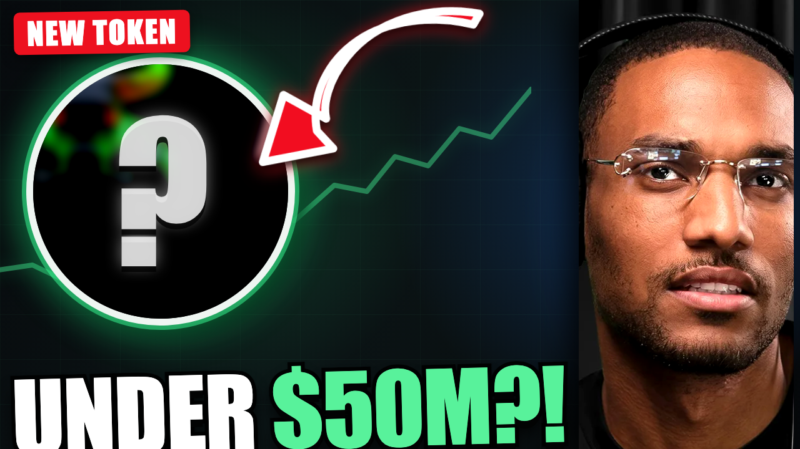

Ansem is a major Solana meme-coin voice. Bullpen's profile post gives the fast biography; his December 2023 WIF post is the primary receipt immediately after it.
The video
Ansem's next microcap token could make MILLIONS... (under $50M)
Ansem says he is buying an unnamed memecoin below $50 million. Black Bull, COBY and MANLET explain why traders now treat his posts, follows and Discord comments as clues to the mystery pick.
Ansem's own Black Bull project shows the scale of his current influence and the creator-attention thesis behind it.
COBY is the follow story, MANLET is the Discord story, and the unnamed sub-$50M post is the open loop that drives the package.
Packaging model: CryptoGodJohn's new token could print millions.

Audience orientation
What Ben needs to know
He is building around The Black Bull and says creator attention is his main focus this cycle. The market is watching his public activity for the next coin.
First show the influence. Then show a follow becoming the COBY narrative, a Discord screenshot becoming the MANLET narrative, and finish on the unnamed pick.
Recording flow
The green Google tabs are section breaks. The dashboard stays open after the final CTA marker.
- Context · 2 tabsBullpen's compact Ansem profile, then his early WIF post.
- Macro · 2 tabsSolana-bottom clip, then Ansem's creator-attention thesis.
- Black Bull · 2 tabsHis direct support post, then the live chart.
- COBY · 3 tabsOfficial follow receipt → market pickup → chart.
- MANLET · 5 tabsJohn alert → Fox → Discord receipt → chart → John's fumble.
- What next · 1 tabFinish the evidence on Ansem's unnamed sub-$50M post.
- Tracker CTAReturn to this dashboard and read the CTA below.
Keep these straight on camera
- Report what Ansem, projects and market accounts posted. This is not a truth-checking video.
- Attribute the fast biography to Bullpen; use the WIF post as the clean first-party receipt.
- COBY is the follow story. MANLET is the Discord story. Neither is confirmed as the unnamed sub-$50M pick.
- The MANLET Discord image is preserved in Abu's public post and attributed to Ansem; do not turn it into a confirmed public buy.
- Close MANLET on John's own “Fumbled massively” caption. Crop or avoid the hypothetical-profit figure in its image.
- Refresh each Dexscreener chart at record time and frame chart movement as aftermath, not a realised return.
Tracker CTA
Benji readout
Ansem didn't name the coin, but the entire market still spent hours trying to reverse-engineer it. That's exactly why we're adding his public X posts to the Rubicon Influencer Feed.
The next time he posts, you'll have the original statement, the relevant token research and the chart context in one place, instead of rebuilding the story later from cropped screenshots.
If you want the same information workflow we're using in this video, join the Rubicon Inner Circle through the link below. This is research, not a buy signal or a promise of returns, and microcaps can lose most or all of their value.
Tab map
The evidence lives in the tabs. Open this only if you need to identify a source.
Show all 15 evidence tabs
Each source retains: ROLE · SHOWS · WHY IT MATTERS · INSPECT · WITHOUT IT. Those details stay in the source metadata so this dashboard remains quick to skim.